Eight LDraw examples · top view + underside · standard LDraw materials
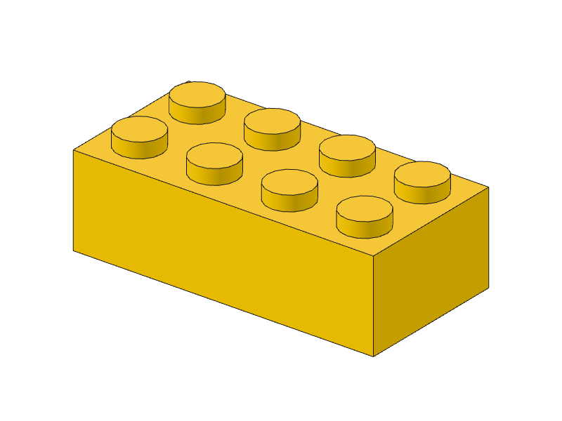
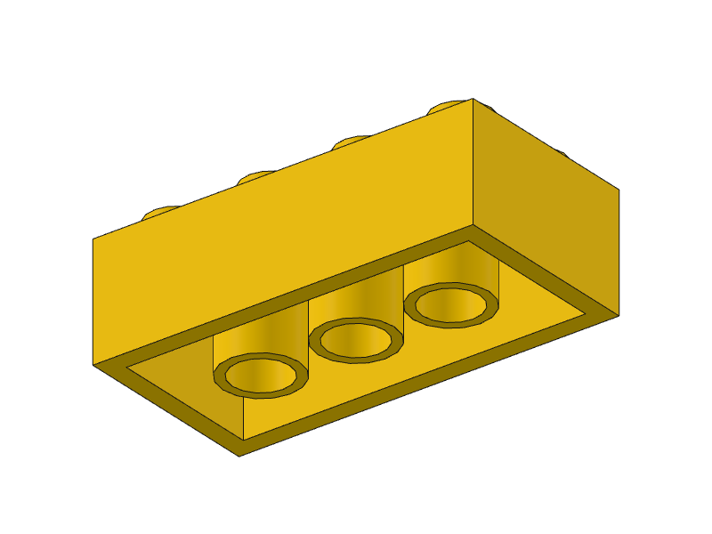
Yellow · 3001.dat
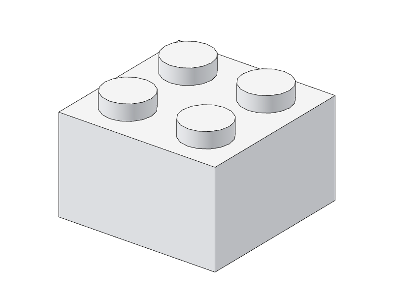
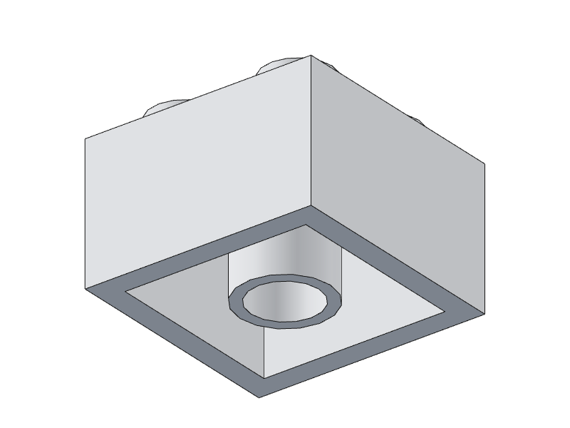
White · 3003.dat
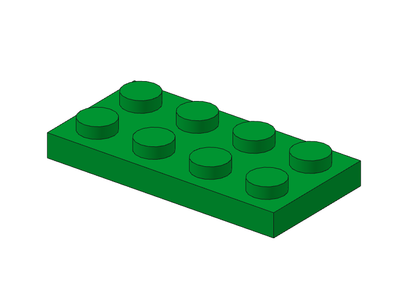
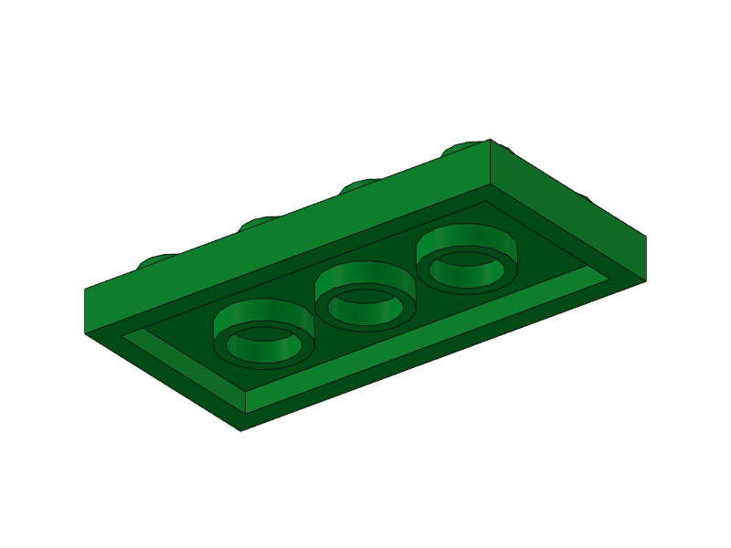
Green · 3020.dat
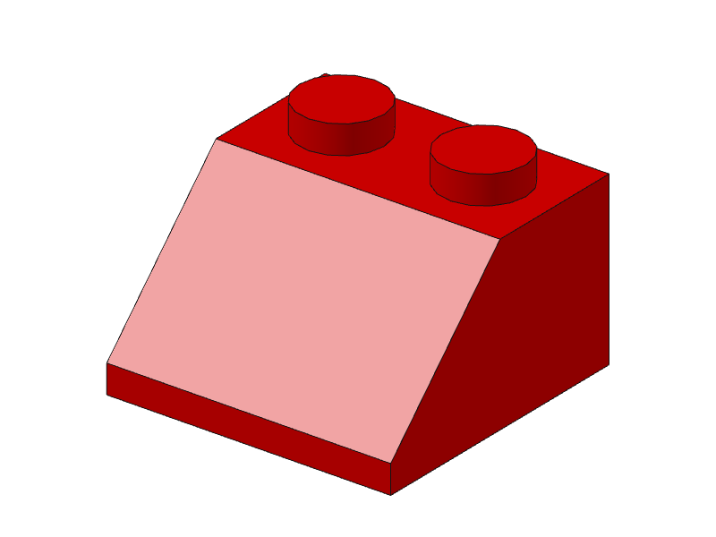
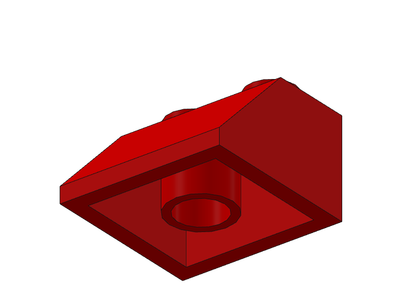
Red · 3039.dat
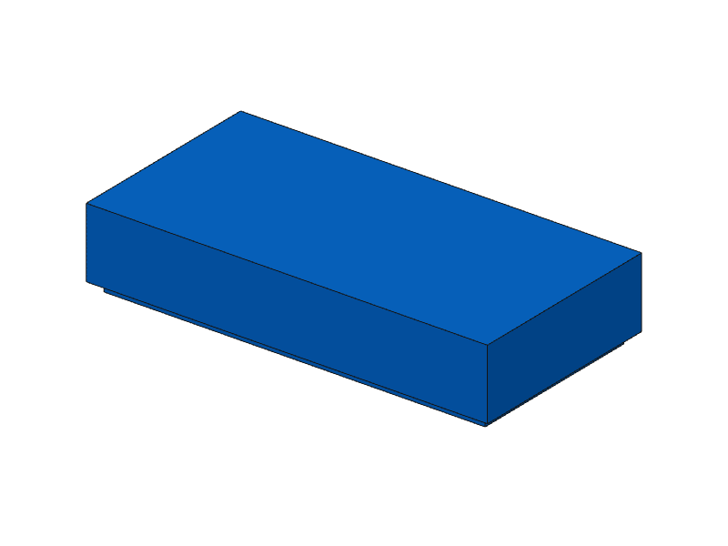
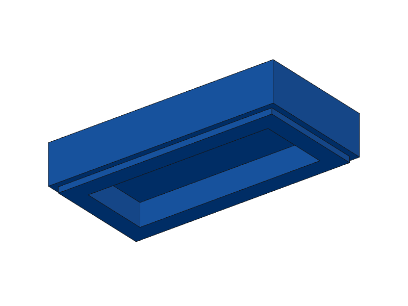
Blue · 3069b.dat
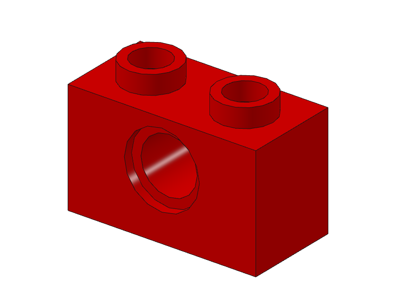
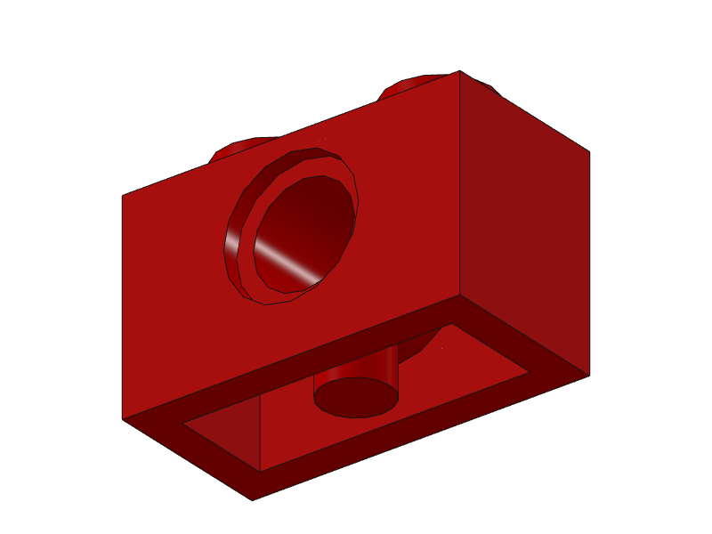
Red · 3700.dat
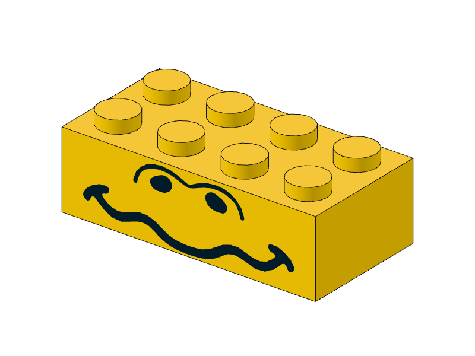
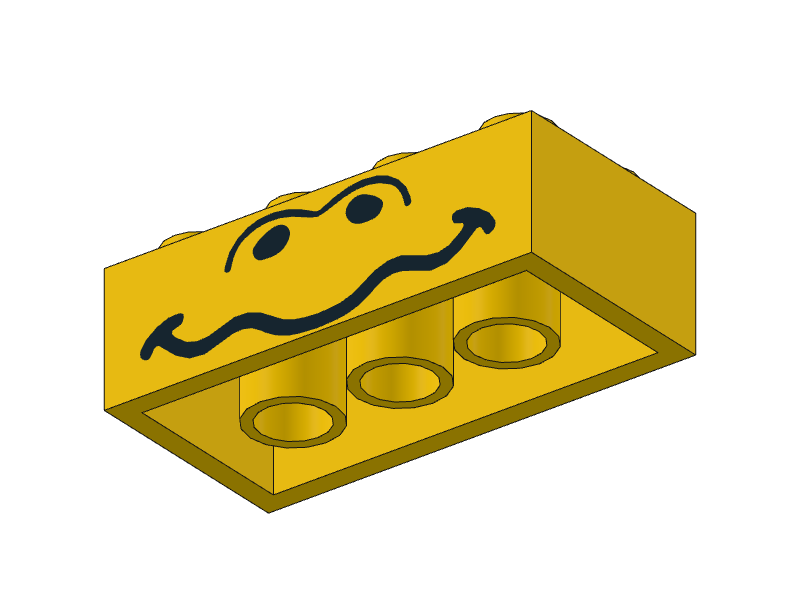
Yellow + fixed print · 3001p08.dat
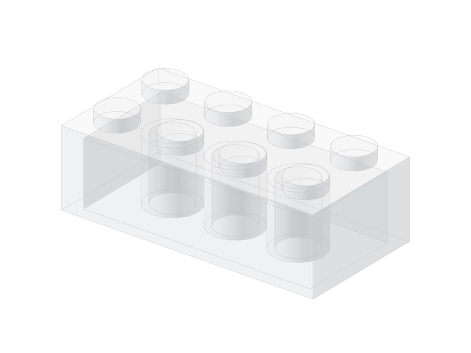
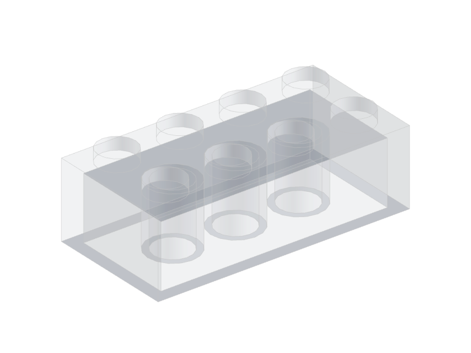
Trans-clear · 3001.dat